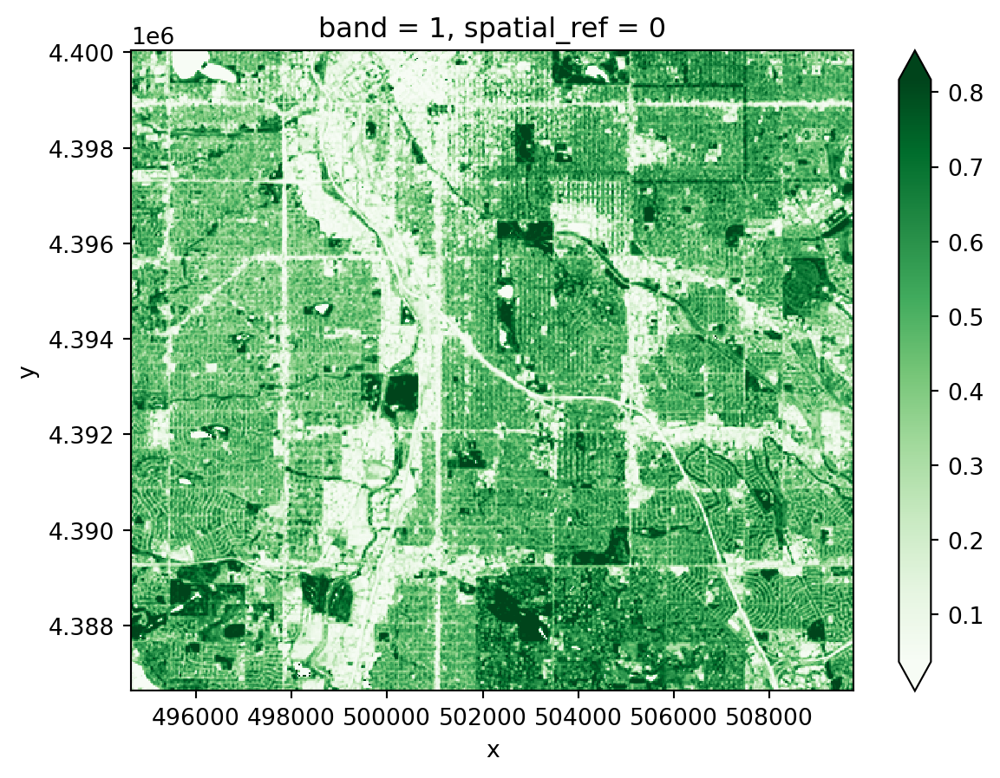

%store band_dictStored 'band_dict' (dict)Introduction to raster data operations
Redlining is a form of systemic racism that funnels resources away from (typically) Black neighborhoods in the United States. Several mechanisms contribute to the overall disinvestment, including requirements that particular homeowners sell only to other white people, and labeling Black neighborhoods as poor investments and thereby preventing anyone in those neighborhoods from getting mortgages and other loans.

You can read more about redlining and data science in (Chapter 2 of Data Feminism ( D’Ignazio and Klein 2020)).
In this case study, you will download satellite-based multispectral data for the City of Denver, and compare that to redlining maps and results from the U.S. Census American Community Survey.
Add imports for packages that help you:
# Interoperable file paths
# Find the home folder
# Work with vector data
# Interactive plots of vector dataimport os # Interoperable file paths
import pathlib # Find the home folder
import geopandas as gpd # Work with vector data
import hvplot.pandas # Interactive plots of vector dataIn the cell below, reproducibly and interoperably define and create a project data directory somewhere in your home folder. Be careful not to save data files to your git repository!
# Define and create the project data directorydata_dir = os.path.join(
pathlib.Path.home(),
'earth-analytics',
'data',
'redlining'
)
os.makedirs(data_dir, exist_ok=True)# Define info for redlining download
# Only download once
# Load from file
# Check the data# Define info for redlining download
redlining_url = (
"https://dsl.richmond.edu/panorama/redlining/static"
"/mappinginequality.gpkg"
)
redlining_dir = os.path.join(data_dir, 'redlining')
os.makedirs(redlining_dir, exist_ok=True)
redlining_path = os.path.join(redlining_dir, 'redlining.shp')
# Only download once
if not os.path.exists(redlining_path):
redlining_gdf = gpd.read_file(redlining_url)
redlining_gdf.to_file(redlining_path)
# Load from file
redlining_gdf = gpd.read_file(redlining_path)
# Check the data
redlining_gdf.plot()ERROR 1: PROJ: proj_create_from_database: Open of /usr/share/miniconda/envs/learning-portal/share/proj failed
/tmp/ipykernel_2922/3581258369.py:13: UserWarning: Column names longer than 10 characters will be truncated when saved to ESRI Shapefile.
redlining_gdf.to_file(redlining_path)
In the cell below:
city column is equal to "Denver"..dissolve() method so we see only a map of Denver.EsriImagery tile source basemap. Make sure we can see your basemap underneath!denver_redlining_gdf = redlining_gdf[redlining_gdf.city=='Denver']
denver_redlining_gdf.dissolve().hvplot(
geo=True, tiles='EsriImagery',
title='City of Denver',
fill_color=None, line_color='darkorange', line_width=3,
frame_width=600
)Your site description should address:
Raster data is arranged on a grid – for example a digital photograph.
Learn more about raster data at this Introduction to Raster Data with Python
For this case study, you will need a library for working with geospatial raster data (rioxarray), more advanced libraries for working with data from the internet and files on your computer (requests, zipfile, io, re). You will need to add:
# Reproducible file paths
import re # Extract metadata from file names
import zipfile # Work with zip files
from io import BytesIO # Stream binary (zip) files
# Find files by pattern
import numpy as np # Unpack bit-wise Fmask
import requests # Request data over HTTP
import rioxarray as rxr # Work with geospatial raster dataimport os # Reproducible file paths
import re # Extract metadata from file names
import zipfile # Work with zip files
from io import BytesIO # Stream binary (zip) files
from glob import glob # Find files by pattern
import numpy as np # Unpack bit-wise Fmask
import matplotlib.pyplot as plt # Make subplots
import requests # Request data over HTTP
import rioxarray as rxr # Work with geospatial raster data.tif files.# Prepare URL and file path for download
# Download sample raster data
response = requests.get(url)
# Save the raster data (uncompressed)
with zipfile.ZipFile(BytesIO(response.content)) as sample_data_zip:
sample_data_zip.extractall(sample_data_dir)# Prepare URL and file path for download
hls_url = (
"https://github.com/cu-esiil-edu/esiil-learning-portal/releases"
"/download/data-release/redlining-foundations-data.zip"
)
hls_dir = os.path.join(data_dir, 'hls')
if not glob(os.path.join(hls_dir, '*.tif')):
# Download sample raster data
hls_response = requests.get(hls_url)
# Save the raster data (uncompressed)
with zipfile.ZipFile(BytesIO(hls_response.content)) as hls_zip:
hls_zip.extractall(hls_dir)The data you just downloaded is multispectral raster data. When you take a color photograph, your camera actually takes three images that get combined – a red, a green, and a blue image (or band, or channel). Multispectral data is a little like that, except that it also often contains spectral bands from outside the range human eyes can see. In this case, you should have a Near-Infrared (NIR) band as well as the red, green, and blue.
This multispectral data is part of the Harmonized Landsat Sentinel 30m dataset (HLSL30), which is a combination of data taken by the NASA Landsat missions and the European Space Agency (ESA) Sentinel-2 mission. Both missions collect multispectral data, and combining them gives us more frequent images, usually every 2-3 days. Because they are harmonized with Landsat satellites, they are also comparable with Landsat data from previous missions, which go back to the 1980s.
Learn more about multispectral data in this Introduction to Multispectral Remote Sensing Data
For now, we’ll work with the green layer to get some practice opening up raster data.
One of the files you downloaded should contain the green band. To open it up:
Bxx where xx is the two-digit band number.mask_and_scale=True parameter to the rxr.open_rasterio function. Now your values should run between 0 and about .25. mask_and_scale=True also represents nodata or na values correctly as nan rather than, in this case -9999. However, this image has been cropped so there are no nodata values in it.band, y, and x. You can see the dimensions in parentheses just to the right of xarray.DataArray in the displayed version of the DataArray. Sometimes we do have arrays with different bands, for example if different multispectral bands are contained in the same file. However, band in this case is not giving us any information; it’s an artifact of how Python interacts with the geoTIFF file format. Drop it as a dimension by using the .squeeze() method on your DataArray. This makes certain concatenation and plotting operations go smoother – you pretty much always want to do this when importing a DataArray with rioxarray.# Find the path to the green layer
# Open the green data in Python
green_da = rxr.open_rasterio(green_path)
display(green_da)
green_da.plot(cmap='Greens', vmin=0, robust=True)# Find the path to the green layer
green_path = glob(os.path.join(hls_dir, '*B03*.tif'))[0]
# Open the green data in Python
green_da = rxr.open_rasterio(green_path, mask_and_scale=True).squeeze()
display(green_da)
green_da.plot(cmap='Greens', vmin=0, robust=True)<xarray.DataArray (y: 447, x: 504)> Size: 901kB
[225288 values with dtype=float32]
Coordinates:
band int64 8B 1
* x (x) float64 4kB 4.947e+05 4.947e+05 ... 5.097e+05 5.097e+05
* y (y) float64 4kB 4.4e+06 4.4e+06 4.4e+06 ... 4.387e+06 4.387e+06
spatial_ref int64 8B 0
Attributes: (12/33)
ACCODE: Lasrc; Lasrc
arop_ave_xshift(meters): 0, 0
arop_ave_yshift(meters): 0, 0
arop_ncp: 0, 0
arop_rmse(meters): 0, 0
arop_s2_refimg: NONE
... ...
TIRS_SSM_MODEL: UNKNOWN; UNKNOWN
TIRS_SSM_POSITION_STATUS: UNKNOWN; UNKNOWN
ULX: 399960
ULY: 4400040
USGS_SOFTWARE: LPGS_16.3.0
AREA_OR_POINT: Area
In your original image, you may have noticed some splotches on the image. These are clouds, and sometimes you will also see darker areas next to them, which are cloud shadows. Ideally, we don’t want to include either clouds or the shadows in our image! Luckily, our data comes with a cloud mask file, labeled as the Fmask band.
Fmask file.Fmask layer into PythonFmask layerFmask layercloud_path = glob(os.path.join(hls_dir, '*Fmask*.tif'))[0]
cloud_da = rxr.open_rasterio(cloud_path, mask_and_scale=True).squeeze()
cloud_da.plot()Notice that your Fmask layer seems to range from 0 to somewhere in the mid-200s. Our cloud mask actually comes as 8-bit binary numbers, where each bit represents a different category of pixel we might want to mask out.
bitorder='little' means that the bit indices will match the Fmask categories in the User Guide, and axis=-1 creates a new dimension for the bits so that now our array is xxyx8.cloud_bits = (
np.unpackbits(
(
# Get the cloud mask as an array...
cloud_da.values
# ... of 8-bit integers
.astype('uint8')
# With an extra axis to unpack the bits into
[:, :, np.newaxis]
),
# List the least significat bit first to match the user guide
bitorder='little',
# Expand the array in a new dimension
axis=-1)
)
bits_to_mask = [
, # Cloud
, # Adjacent to cloud
, # Cloud shadow
] # Water
cloud_mask = np.sum(
# Select bits 1, 2, and 3
cloud_bits[:,:,bits_to_mask],
# Sum along the bit axis
axis=-1
# Check if any of bits 1, 2, or 3 are true
) == 0
cloud_mask# Get the cloud mask as bits
cloud_bits = (
np.unpackbits(
(
# Get the cloud mask as an array...
cloud_da.values
# ... of 8-bit integers
.astype('uint8')
# With an extra axis to unpack the bits into
[:, :, np.newaxis]
),
# List the least significat bit first to match the user guide
bitorder='little',
# Expand the array in a new dimension
axis=-1)
)
# Select only the bits we want to mask
bits_to_mask = [
1, # Cloud
2, # Adjacent to cloud
3, # Cloud shadow
5] # Water
# And add up the bits for each pixel
cloud_mask = np.sum(
# Select bits
cloud_bits[:,:,bits_to_mask],
# Sum along the bit axis
axis=-1
)
# Mask the pixel if the sum is greater than 0
# (If any of the bits are True)
cloud_mask = cloud_mask == 0
cloud_maskarray([[ True, True, True, ..., True, True, True],
[ True, True, True, ..., True, True, True],
[ True, True, True, ..., True, True, True],
...,
[False, False, False, ..., True, True, True],
[False, False, False, ..., True, True, True],
[False, False, False, ..., True, True, True]]).where() method to remove all the pixels you identified in the previous step from your green reflectance DataArray.green_masked_da = green_da.where(cloud_mask, green_da.rio.nodata)
green_masked_da.plot(cmap='Greens', vmin=0, robust=True)
You could load multiple bands by pasting the same code over and over and modifying it. We call this approach “copy pasta”, because it is hard to read (and error-prone). Instead, we recommend that you use a for loop.
Read more about for loops in this Introduction to using for loops to automate workflows in Python
The sample data comes with 15 different bands. Some of these are spectral bands, while others are things like a cloud mask, or the angles from which the image was taken. You only need the spectral bands. Luckily, all the spectral bands have similar file names, so you can use indices to extract which band is which from the name:
bands dictionary based on the User Guide. You will use this to replace band numbers from the file name with human-readable names.glob, or by using a conditional inside your for loop.start_index and end_index variables with the position values. You might need to test this before moving on!band_dictfor loops can be a bit tricky! You may want to test your loop line-by-line by printing out the results of each step to make sure it is doing what you think it is.
# Define band labels
bands = {
'B01': 'aerosol',
...
}
band_dict = {}
band_paths = glob(os.path.join(hls_dir, '*.tif'))
for band_path in band_paths:
# Get the band number and name
start_index =
end_index =
band_id = band_path[start_index:end_index]
band_name = bands[band_id]
# Open the band and accumulate
band_dict[band_name] =
band_dict# Define band labels
bands = {
'B01': 'aerosol',
'B02': 'red',
'B03': 'green',
'B04': 'blue',
'B05': 'nir',
'B06': 'swir1',
'B07': 'swir2',
'B09': 'cirrus',
'B10': 'thermalir1',
'B11': 'thermalir2'
}
fig, ax = plt.subplots(5, 2, figsize=(10, 15))
band_re = re.compile(r"(?P<band_id>[a-z]+).tif")
band_dict = {}
band_paths = glob(os.path.join(hls_dir, '*.B*.tif'))
for band_path, subplot in zip(band_paths, ax.flatten()):
# Get the band name
band_name = bands[band_path[-7:-4]]
# Open the band
band_dict[band_name] = rxr.open_rasterio(
band_path, mask_and_scale=True).squeeze()
# Plot the band to make sure it loads
band_dict[band_name].plot(ax=subplot)
subplot.set(title='')
subplot.axis('off')
%store band_dictStored 'band_dict' (dict)When working with multispectral data, the individual reflectance values do not tell us much, but their relationships do. A normalized spectral index is a way of measuring the relationship between two (or more) bands.
We will look vegetation cover using NDVI (Normalized Difference Vegetation Index). How does it work? First, we need to learn about spectral reflectance signatures.
Every object reflects some wavelengths of light more or less than others. We can see this with our eyes, since, for example, plants reflect a lot of green in the summer, and then as that green diminishes in the fall they look more yellow or orange. The image below shows spectral signatures for water, soil, and vegetation:
 > Image source: SEOS Project
> Image source: SEOS Project
Healthy vegetation reflects a lot of Near-InfraRed (NIR) radiation. Less healthy vegetation reflects a similar amounts of the visible light spectra, but less NIR radiation. We don’t see a huge drop in Green radiation until the plant is very stressed or dead. That means that NIR allows us to get ahead of what we can see with our eyes.
 > Image source: Spectral signature literature review by px39n
> Image source: Spectral signature literature review by px39n
Different species of plants reflect different spectral signatures, but the pattern of the signatures are similar. NDVI compares the amount of NIR reflectance to the amount of Red reflectance, thus accounting for many of the species differences and isolating the health of the plant. The formula for calculating NDVI is:
\[NDVI = \frac{(NIR - Red)}{(NIR + Red)}\]
Read more about NDVI and other vegetation indices:
dict.# Calculate NDVIdenver_ndvi_da = (
(band_dict['nir'] - band_dict['red'])
/ (band_dict['nir'] + band_dict['red'])
)
denver_ndvi_da.plot(robust=True)
You can also calculating other indices that you find on the internet or in the scientific literature. Some common ones in this context might be the NDMI (moisture), NDBaI (bareness), or the NDBI (built-up).